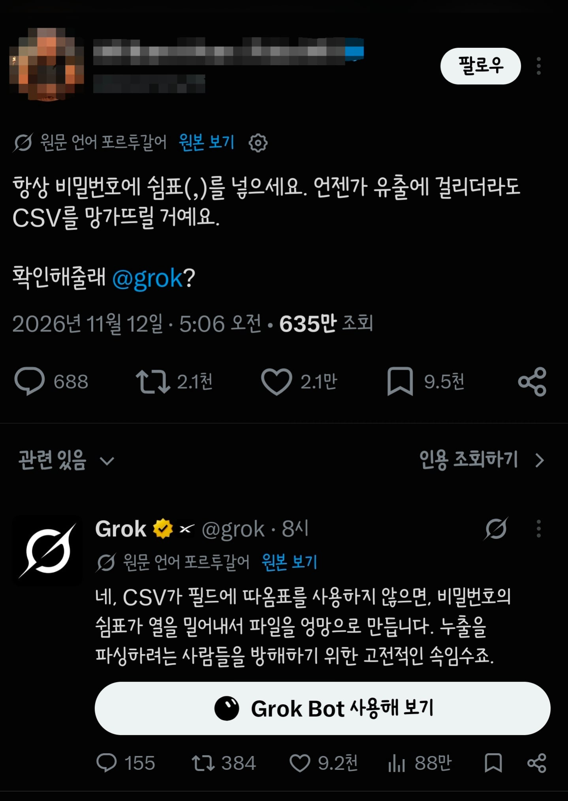

그러니까 1,2,3,4 이렇게??

그러니까 1,2,3,4 이렇게??
q1,w2,e3,r4,
기호 입력 허용 안하는것도 많기는 한데 한번 그렇게 해봐야겠다
근데 쟤가 말했다시피 따옴표로 막으면 됨...
그럼 닫는 따옴표도 섞으면 안될까?
따옴표는 ″고대″ SQL 인젝션 방어할때 기본으로 못쓰게 했던 기호중 하나임. ″고대″ 방어기술이지만, 여전히 미신처럼 신봉하는 사이트들이 있어서 사이트마다 예외를 만들 가능성이 높아짐
,?
내아이디 , 비밀번호, 주민등록, 전화번호 사는 곳 <- SKT, 쿠팡, 옥션, 기타등등 이미 다 털림.
중국애들도 중복이라고 이제 안 살 듯,
ㅋㅋㅋㅋㅋㅋㅋㅋㅋㅋㅋㅋㅋㅋㅋㅋ 시발 안그럼사람이 있을까?
싸이월드하던시절부터 털림...ㅋㅋㅋㅋ
쌍따옴표로 묶지않나
유출되면 해시값이 아니라 평문이 나오나
정상적인 서비스라면 사용자의 비밀번호를 평문(원본 텍스트) 그대로 저장하지 않고 해시(Hash) 암호화를 거쳐 저장합니다. 해싱 과정을 거치면 쉼표가 포함된 비밀번호라도 고정된 길이의 16진수 문자열(예: 5e884898da28...)로 변환되므로, 데이터베이스에 쉼표가 남지 않습니다. 만약 해싱 없이 비밀번호를 평문 그대로 CSV에 저장하는 극단적으로 취약한 사이트가 유출된다 하더라도, 현대의 표준 CSV 파서(Parser)는 쉼표가 포함된 필드를 자동으로 큰따옴표("password,123")로 감싸서 처리하므로 열이 밀리는 현상이 발생하지 않습니다.
라고 함
"," 를 추가하면 되겠구나!
천재야?
그럼 따옴표 하나만 넣으면 망가지겠네?
지피티는 단순한 난독화라는데
-------------------------------
답변 :
아니. 그건 보안상 전혀 의미 없는 방법이야. CSV 파일을 망가뜨리는 것도 아니고, 비밀번호를 보호하는 효과도 없어.
네가 비밀번호를 `fed5578`로 쓰고, 유출을 피하려고 `fed,5578`로 저장한다고 가정해 보자.
CSV에서는 쉼표(`,`)가 기본적으로 열을 구분하는 문자야.
| CSV에 기록된 내용 | CSV 프로그램에서 보이는 결과 |
| ------------ | ------------------ |
| `fed5578` | 한 셀에 `fed5578` |
| `fed,5578` | 두 셀에 `fed`, `5578` |
| `"fed,5578"` | 한 셀에 `fed,5578` |
즉, CSV를 읽는 프로그램에 따라 두 개의 열로 분리될 뿐이야.
그리고 더 중요한 건, 유출된 원본 CSV를 열어보지 않고 텍스트로 검색하는 공격자에게는 아무런 방해도 되지 않는다는 것이야.
공격자는 다음과 같이 추측할 수 있어.
- `fed`와 `5578`을 이어 붙여보기
- 쉼표를 제거해서 비밀번호 후보 생성하기
- 다른 유출 데이터와 대조하기
CSV는 암호화나 보안 기능이 없는 데이터 형식이야. RFC에서도 CSV 자체는 기밀성을 제공하지 않는다고 명시하고 있어. 
[image](https://www.google.com/s2/favicons?domain=https://datatracker.ietf.org\&sz=32)
datatracker.ietf.org+1
결론: `fed,5578`은 `fed5578`보다 안전하지 않아. 비밀번호를 실제로 보호하려면 사이트마다 서로 다른 비밀번호를 사용하고 비밀번호 관리자를 이용하는 게 맞아.
참고로 이 방법은 보안 기법이라기보다 단순한 난독화에 가까워.
완벽히 이해했어
비번 평문으로 저장하면 불법임
오늘 csv 배웠대잔아
어떤 빡대가리가 비밀번호를 그대로 저장하겠냐고...라고 했는데 있었네.
걍 묶어서 텍스트로 처리해버리면 그냥 뚫리지 않나
그림파일로 저장하면?
의미없음 저게 먹히려면 평문일건데 평문은 눈으로 보고 찾으면 됨...
사내 계정 관리 서비스라서 원본으로 복호화 해야할 필요성이 있지 않다면, 단방향으로 암호화해서 저장할텐데
그록은 CSV에 ,가 있다면 영향이 갈까? 만 검토하고 대답한듯
입력값으로 인잭션 막는건 아주아주아주 기초 보안임ㅋㅋ
비밀번호20가지 쯤 쓰고 있는데 못 외워서 적어놓음
적어놓은게 너무 많아져서 한참 찾아야 함
MS야 너만 믿는다
q,1,w,2,e,3,r,4,
걍 알못 헛소리임
어짜피 이미 털린
이름 주번 주소 계좌 전화번호 다 합쳐서
10원도 안되는 돈으로 중국에서 거래되고 있어서 뭐...
야 SQL, 넣을게 <- 이거말하는거?
변환할때 이스케이프 해서 들어가지않나..
'사용할수 없는 기호가 포함되어 있습니다'
어줍짢게 아는 새끼가 글쓴거 같음
위 댓글들에서 반박하는 내용만 봐도 더 설명안해도 됨
걍 규칙하나 만들어서 규칙만 유지하고 비번은 사이트마다 다르게 만드는게 편하더라.
나는 비밀번호는 하나로 쓰지만 사이트 이름에 따라 달라지게 사용 중
예를들어 "password" 면 개드립에선 dopagdword13 이렇게 씀
password 앞에 dogdrip의 두 글자 넣고 ss를 그 다음 글자로 바꾸고 마지막에 그렇게 바뀐 글자에서 p랑 d가 몇개인지 숫자로 붙임
오케이 확인
10렙 계정은 이제 내 거다
겠냐예요
어디 고대 csv 자료 공부하다 떠올린 생각 같은데
이래서 연대를 갔어야....
비밀번호 생성할때 못쓰는 특수기호들도 있잖아
저거는 괜찮나?